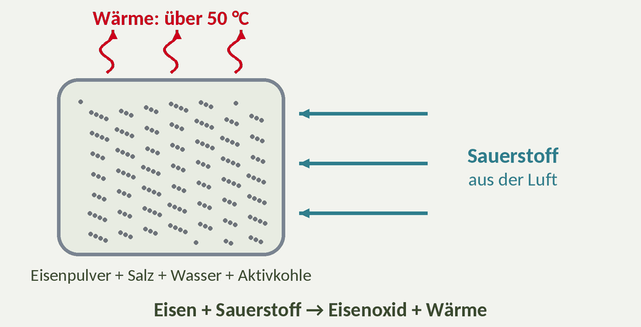

![]()
![BHAK Wappen]()
![]()

- Im Winterbiwak steckst du einen Handwärmer in den Handschuh. Kaum ist das Tütchen offen, wird es über 50 °C warm – stundenlang.
- Drinnen ist feines Eisenpulver. Sobald Luft dazukommt, verbindet es sich mit Sauerstoff – das Eisen rostet – nur viel schneller als ein Nagel, weil das Pulver so fein ist.
- Dabei passieren gleich zwei Dinge, um die es in dieser Einheit geht: Elektronen wandern (Redoxreaktion) und es wird Energie frei (exotherm).
Rosten, Verbrennen, Akku laden, Verdauen – überall wandern Elektronen und wird Energie umgesetzt. Heute lernst du, wie das funktioniert.